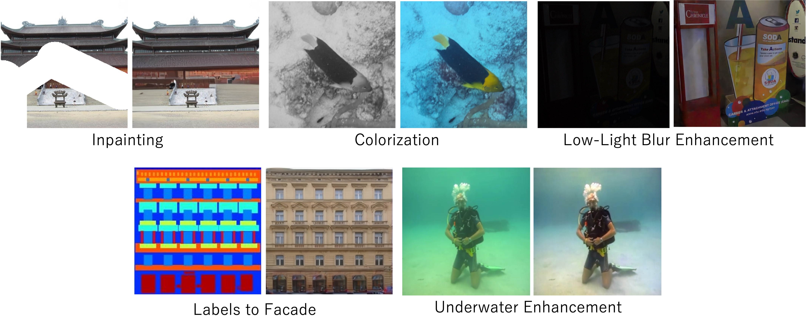

 ECCV 2026 Accepted Improving Image-to-Image Translation via a Rectified Flow Reformulation Satoshi Iizuka†, Shun Okamoto†, Kazuhiro Fukui †Equal contribution. arXiv
IEEE Access, 2026 Fine-Grained Fashion Feature Embedding for Global, Local, and Contextual Analysis in Fashion Social Media Popularity Prediction Shun Okamoto, Satoshi Iizuka, Kazuhiro Fukui Paper Project Dataset